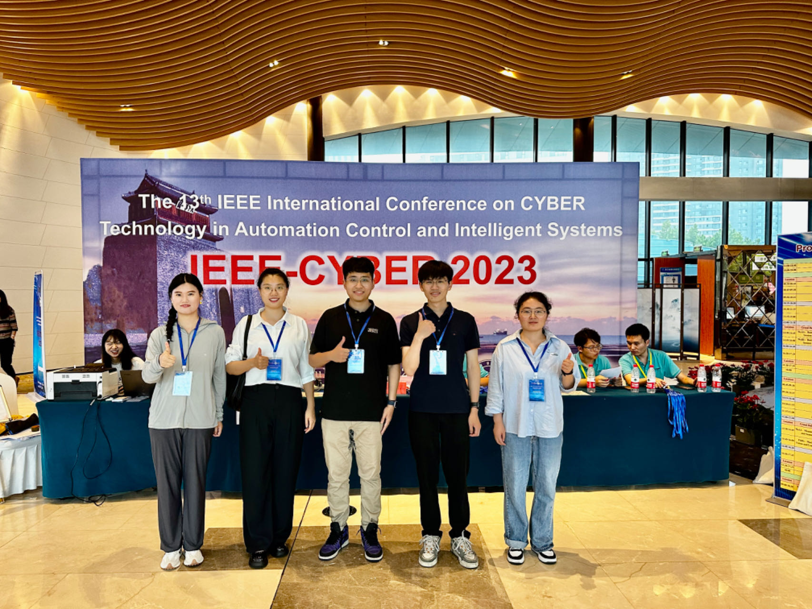
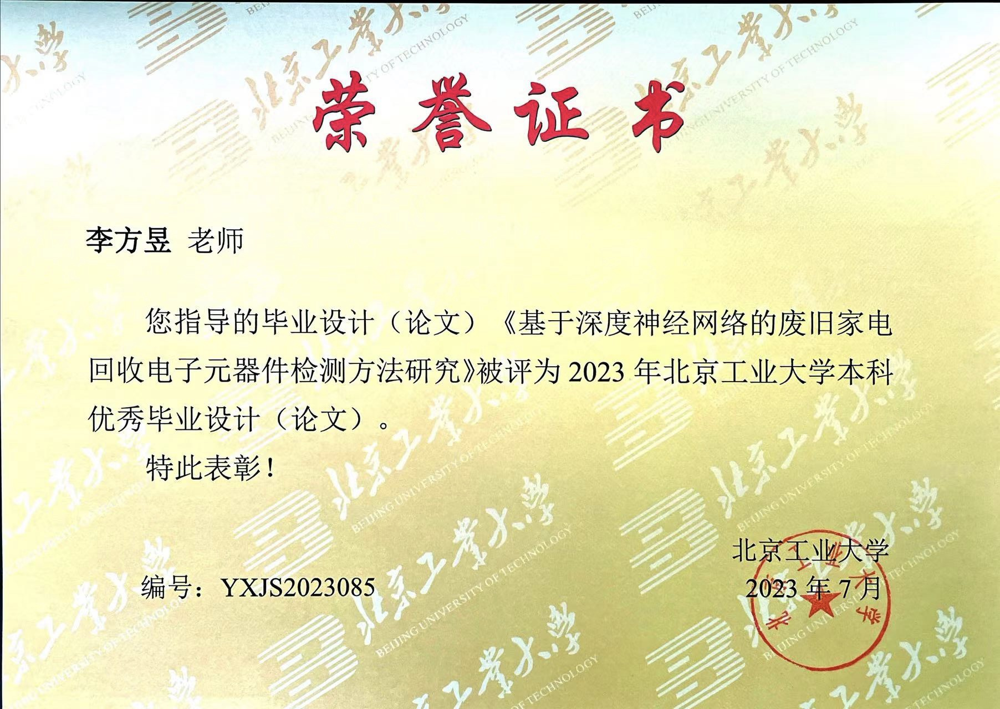
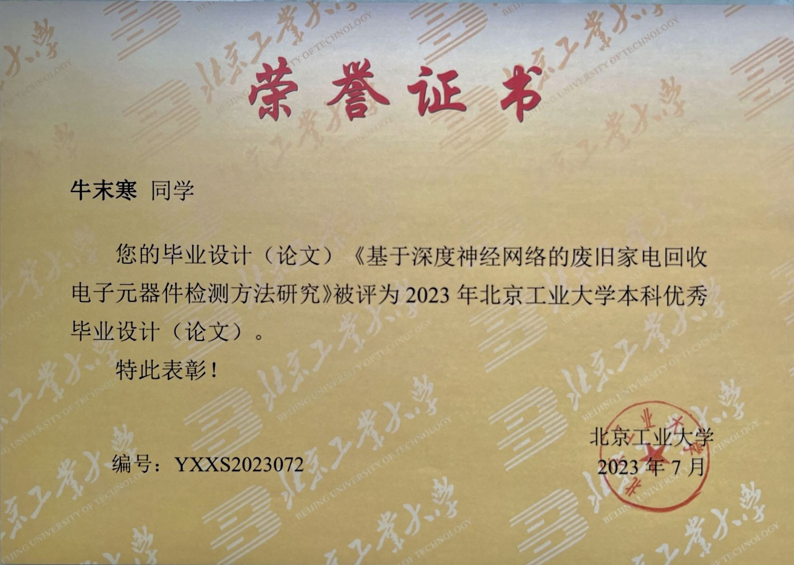

CPS Computational Learning Laboratory
News
Keep updating CPSCLL activities......CPSCLL members at Reykjavík, Iceland, June 17-21, 2024
Liu Jinyi and Niu Mohang respectively gave oral presentations at the 18th IEEE International Conference on Control and Automation (Reykjavík, Iceland) on June 20 and 21, 2024.
CPSCLL members at Xi'an, May 25-27, 2024
Jiarong Du gave an oral presentation in the 36th Chinese Control and Decision Conference (Xi'an, China) on May 27 2024.
CPSCLL members at Xi'an, May 17-18, 2024
Ruichong Ma gave an oral presentation in 2024 Conference on Intelligent Networked Things (Xi'an, China) on May 18 2024.
CPSCLL members at Yibin, September 22-24, 2023
Junnuo Lin gave an oral presentation in the The 13th CAA Symposium on Fault Detection, Supervision, and Safety for Technical Processes (Yibin, China) on September 22 2023.
CPSCLL members at Qinhuangdao, July 11-14, 2023
Xuqiang Chen gave an oral presentation in the 13th Annual IEEE International Conference on CYBER Technology in Automation, Control, and Intelligent Systems (Qinghuangdao, China) on July 12 2023.

2023 Outstanding Undergraduate Graduation Award of Beijing University of Technology, June, 2023
Congrats to Mohan Niu for winning the Outstanding Undergraduate Graduation Award of Beijing University of Technology.

